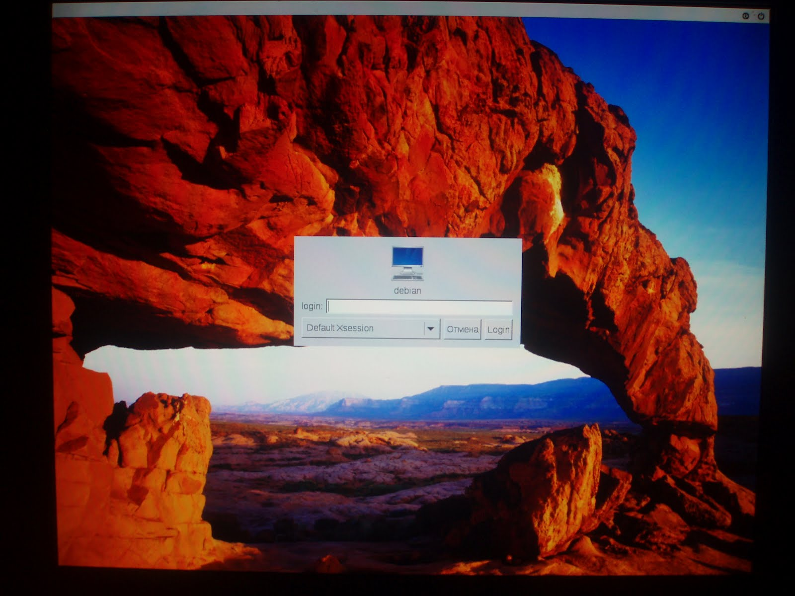

LightDM - это относительно новый Display Manager. До сих пор я пользовался XDM, но теперь (хотя на самом деле уже полгода) пользуюсь LightDM. Установил его из репозитория Debian Wheezy, вместе с XFCE 4.8, когда пытался в очередной раз разобраться с монтированием сменных устройств.
К слову сказать, теперь это стало довольно просто - всеми настройками разрешений управляет демон polkit-1, дисками - демон udisks, питанием - upower, сеансами и включением-выключением компьютера - демон consolekit. Последние три демона обращаются за проверкой доступности запрашиваемого действия для данного пользователя к первому. Всё это хозяйство работает через dbus и интегрируется с любым DE. Но - об этом лучше отдельно.
До XDM я уже пробовал различные DM, но большинство из них мне не понравились по одной из трёх причин: тяжёлые (тянут тяжёлый тулкит и dbus), некрасивые (некоторые из них), не поддерживают XDMCP (тоже некоторые). Тогда я остановился на XDM как на лёгком, поддерживающем XDMCP и поддающемся обработке напильником до терпимого состояния. Кроме XDM пробовал я тогда KDM, GDM, WDM и SLiM.
Для настройки запуска двух X-серверов я откорректировал файл /etc/lightdm/lightdm.conf, так что в нём теперь есть (кроме всего прочего) пара таких строчек:
[Seat:0] xserver-command=/usr/bin/X :0 vt7 -nolisten tcp [Seat:1] xserver-command=/usr/bin/X :1 vt8 -nolisten tcp
Между обоими X-серверами можно переключаться точно так же, как и в XDM - нажатием Ctrl-Alt-F7 и Ctrl-Alt-F8.
В файле /etc/lightdm/lightdm-gtk-greeter.conf я настроил фоновую картинку и используемый по умолчанию шрифт, так что конфиг в целом принял следующий вид:
[greeter] background=/root/wallpapers/canyon.jpg font-name=Liberation Sans 12 xft-hintstyle=hintfull
Выглядит всё это вот так:
